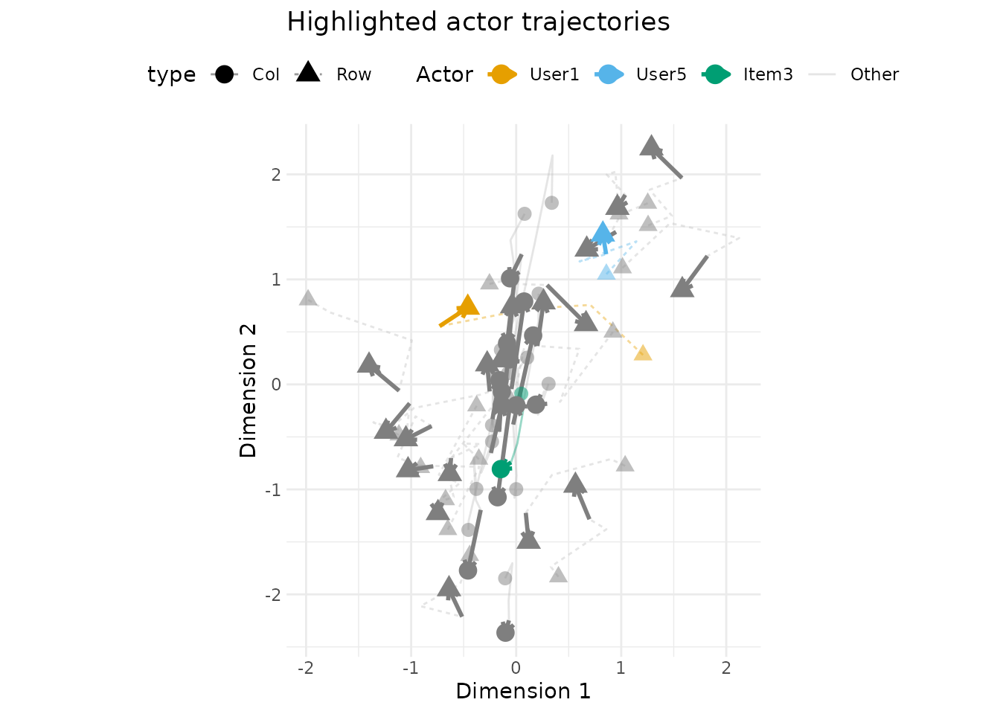

Bipartite Network Analysis
Cassy Dorff, Shahryar Minhas, and Tosin Salau
2026-07-22
Source:vignettes/bipartite.Rmd
bipartite.RmdIntroduction
Many real-world networks are bipartite: two distinct types of nodes, with ties forming only between types, never within them. Students enroll in courses, countries sign treaties, legislators join committees. The adjacency matrix is rectangular rather than square, and the row and column nodes play fundamentally different roles.
Both ame() (cross-sectional) and lame()
(longitudinal) support bipartite networks. The key difference from the
unipartite case is that the model uses separate latent spaces for the
two node types, connected by an interaction matrix
.
The Bipartite AME Model
In a bipartite network, the probability of a tie between row node and column node is modeled as:
The additive effects work as in the unipartite case (see the cross-sectional vignette): captures how “active” row node is, how “popular” column node is. The multiplicative term replaces the unipartite : row and column nodes live in potentially different-dimensional latent spaces ( and ), and is a interaction matrix.
How is handled differs between the cross-sectional and longitudinal entry points:
- In
ame()(cross-sectional bipartite), is initialised to a rank-truncated scaled identity and held fixed during MCMC. The rotation and scaling of the interaction are absorbed into and , so itself is not estimated; what is identified is the overall multiplicative term . - In
lame()(longitudinal bipartite), the default MCMC estimator samples each iteration from its conditional Gaussian. Withdynamic_G = FALSEa single is shared across periods; withdynamic_G = TRUEa separate is drawn per period (see thedynamic_Gsection below, which also covers the fast ALS path).
In either case, the row-side positions (, shape ) and column-side positions (, shape ) can be chosen at different ranks.
Two terms are absent in the bipartite setting: the dyadic correlation (a row actor is never also a column actor, so there is no reciprocal tie to correlate), and the joint covariance of and , which instead have independent variances since they describe different types of actors.
Supported families in bipartite mode
Every family that works for a square network also works for a
rectangular one. The rectangular Z-samplers live in
R/rZ_bipartite.R and treat each cell as independent given
the linear predictor (there is no reciprocal-cell coupling in a
bipartite graph). The supported set:
| Family | Bipartite supported? | Notes |
|---|---|---|
normal |
yes | the unrestricted-Gaussian baseline. |
binary |
yes | probit link on tie / no-tie. |
ordinal |
yes | rectangular ordinal-probit sampler (rZ_ord_bip_fc); use
data-induced cutpoints (default) or pass
ordinal_cutpoints = "explicit" for the Cowles MH variant on
the unipartite path. |
cbin |
yes | constrained-binary with odmax interpreted as the
per-row outdegree cap. |
frn |
yes | fixed-rank-nominations; each row’s top-odmax ranks are
observed. |
poisson |
yes | rectangular MH on Z; supports the period_exposure
offset on the longitudinal path. |
The same table applies to lame() in bipartite mode.
Time-varying interaction matrices (dynamic_G = TRUE) are
covered in their own section below, on both the MCMC and ALS paths.
Cross-Sectional Analysis with ame()
Coming from long-format data?
If your data lives in a long-format table (patient_id,
drug, prescribed), build a bipartite
netify object and pass it directly to
ame():
rx_net <- netify::netify(
rx,
actor1 = "patient_id", actor2 = "drug",
weight = "prescribed",
mode = "bipartite",
symmetric = FALSE,
missing_to_zero = FALSE
)
fit <- ame(rx_net, family = "binary", mode = "bipartite", R = 2)Row and column names carry through to fit$APM (one
number per patient) and fit$BPM (one number per drug)
downstream. Use missing_to_zero = TRUE only when absent
patient-drug rows are observed non-prescriptions rather than unobserved
dyads.
Simulating Data
We simulate a bipartite network of 30 students and 20 courses, each with a 2-dimensional latent position; the interaction matrix determines how those dimensions combine to predict enrollment.
# simulate a student-course enrollment network
n_students <- 30
n_courses <- 20
# true latent positions (unobserved in practice)
U_true <- matrix(rnorm(n_students * 2, 0, 0.8), n_students, 2)
V_true <- matrix(rnorm(n_courses * 2, 0, 0.8), n_courses, 2)
# interaction matrix: dimension 1 has positive affinity,
# dimension 2 has negative (students high on dim 2 avoid courses high on dim 2)
G_true <- matrix(c(1, 0.5, 0.5, -1), 2, 2)
# generate enrollment probabilities and binary outcomes
# negative intercept keeps enrollment rate realistic (~25-30%)
eta <- -0.8 + U_true %*% G_true %*% t(V_true)
prob <- pnorm(eta)
Y_bipartite <- matrix(rbinom(n_students * n_courses, 1, prob),
n_students, n_courses)
rownames(Y_bipartite) <- paste0("Student", 1:n_students)
colnames(Y_bipartite) <- paste0("Course", 1:n_courses)
cat("Network dimensions:", dim(Y_bipartite), "\n")
#> Network dimensions: 30 20
cat("Enrollment rate:", round(mean(Y_bipartite), 2), "\n")
#> Enrollment rate: 0.29Fitting the Model
Fitting a bipartite model requires setting
mode = "bipartite" and specifying the latent dimensions for
each node type separately via R_row and
R_col.
# burn and nscan are small so the vignette builds quickly
# for real analyses, use burn >= 1000 and nscan >= 5000.
fit_cross <- ame(
Y = Y_bipartite,
mode = "bipartite",
R_row = 2, # latent dimensions for students
R_col = 2, # latent dimensions for courses
family = "binary",
burn = 100,
nscan = 500,
odens = 5,
verbose = FALSE,
# save thinned U/V draws so latent_positions() can report posterior SDs
posterior_opts = posterior_options(save_UV = TRUE)
)
summary(fit_cross)
#>
#> === AME Model Summary ===
#>
#> Call:
#> [1] "Y ~ a[i] + b[j] + U[i,1:2] %*% G %*% V[j,1:2]', family = 'binary'"
#>
#> Regression coefficients:
#> ------------------------
#> Estimate StdError z_value p_value CI_lower CI_upper
#> intercept -0.813 0.209 -3.881 0 -1.228 -0.451 ***
#> ---
#> Signif. codes: 0 '***' 0.001 '**' 0.01 '*' 0.05 '.' 0.1 ' ' 1
#> Note: stars are a visual hint from posterior mean / SD only; for inference use the credible intervals.
#>
#> Variance components:
#> -------------------
#> Estimate StdError
#> va 0.301 0.085
#> cab 0.000 0.000
#> vb 0.406 0.123
#> ve 1.000 0.000
#> rho 0.000 0.000
#> (va = sender, cab = sender-receiver covariance, vb = receiver,
#> rho = dyadic correlation, ve = residual variance)
#> Note: bipartite model (rho fixed to 0, cab fixed to 0)The summary shows the intercept (we included no covariates) and the
variance components. The fitted object also stores student latent
positions (U), course latent positions (V),
the (fixed) interaction matrix (G), and additive effects
(APM for student activity, BPM for course
popularity).
Visualizing the Latent Space
uv_plot with layout = "biplot" places both
node types in the same latent space: students and courses that appear
close together have a higher predicted probability of a tie.

Because ame() holds
fixed (its entries carry no information – rotation and scaling are
absorbed into
and
),
the estimated quantity to inspect is the overall multiplicative term
,
which we visualise directly:
G_mult <- fit_cross$U %*% fit_cross$G %*% t(fit_cross$V)
G_df <- data.frame(
Student = rownames(G_mult)[row(G_mult)],
Course = colnames(G_mult)[col(G_mult)],
Fitted = as.vector(G_mult)
)
# order axes numerically (Student1, Student2, ...) instead of the default
# alphabetical factor order (Student1, Student10, Student11, ...)
G_df$Student <- factor(G_df$Student, levels = paste0("Student", n_students:1))
G_df$Course <- factor(G_df$Course, levels = paste0("Course", 1:n_courses))
# rdbu reversed (direction = -1): positive => red, negative => blue,
# zero => white. By default scale_fill_distiller() centres white at the
# midpoint of the DATA range, not at zero -- so we pass symmetric limits
# c(-mx, mx) to force the white midpoint onto zero, which is the right
# choice for a signed effect. We cap the fill at the 99th percentile of
# |UGV'| (clamping the few more extreme cells to the cap) so a single
# outlying cell cannot wash the rest of the map to near-white. RdBu is
# colour-blind-safe per ColorBrewer's protanopia / deuteranopia checks.
mx <- quantile(abs(G_df$Fitted), 0.99, na.rm = TRUE)
G_df$Fitted_capped <- pmax(pmin(G_df$Fitted, mx), -mx)
ggplot(G_df, aes(x = Course, y = Student, fill = Fitted_capped)) +
geom_tile() +
scale_fill_distiller(palette = "RdBu", direction = -1,
limits = c(-mx, mx)) +
labs(title = "Fitted Multiplicative Structure (UGV')",
subtitle = "Red = positive, blue = negative; colour scale capped at the 99th percentile",
x = "Course", y = "Student",
fill = "U G V'") +
theme_bw() +
theme(panel.border = element_blank(),
axis.ticks = element_blank(),
legend.position = "top",
axis.text.x = element_text(angle = 45, hjust = 1),
axis.text.y = element_text(size = 6))
Longitudinal Analysis with lame()
When bipartite networks are observed over multiple time periods
(enrollments across semesters, country–treaty memberships across
decades), lame() pools information across time while
optionally allowing the latent structure to evolve.
Simulating Longitudinal Data
We simulate a panel of user–item networks over 5 periods whose latent
positions drift via an AR(1) process with
.
We use the normal family throughout this section because
the bipartite dynamic sampler mixes well for continuous outcomes at
vignette-scale chains; family = "binary" runs on the same
machinery but wants burn >= 1000 and
nscan >= 5000. One parameterisation note: the chunk uses
the stationary-variance form
(
with
,
marginal variance held at 1), while the sampler uses the
innovation-variance form
(
with
);
the two coincide when
,
so don’t mix them. The data-generating
is constant across periods, matching dynamic_G = FALSE; the
time-varying alternative appears further down.
n_periods <- 5
n_users <- 20
n_items <- 15
true_rho <- 0.9
G_long <- matrix(c(1, 0.3, 0.3, -0.8), 2, 2)
U_t <- vector("list", n_periods)
V_t <- vector("list", n_periods)
U_t[[1]] <- matrix(rnorm(n_users * 2), n_users, 2)
V_t[[1]] <- matrix(rnorm(n_items * 2), n_items, 2)
for(t in 2:n_periods) {
U_t[[t]] <- true_rho * U_t[[t-1]] +
sqrt(1 - true_rho^2) * matrix(rnorm(n_users * 2), n_users, 2)
V_t[[t]] <- true_rho * V_t[[t-1]] +
sqrt(1 - true_rho^2) * matrix(rnorm(n_items * 2), n_items, 2)
}
Y_list <- list()
for(t in 1:n_periods) {
eta_t <- U_t[[t]] %*% G_long %*% t(V_t[[t]])
# continuous-valued interactions (normal family): a numerically stable
# outcome for demonstrating the dynamic bipartite sampler end to end.
Y_list[[t]] <- eta_t +
matrix(rnorm(n_users * n_items, 0, 0.5), n_users, n_items)
rownames(Y_list[[t]]) <- paste0("User", 1:n_users)
colnames(Y_list[[t]]) <- paste0("Item", 1:n_items)
}
names(Y_list) <- paste0("T", 1:n_periods)
cat("Time periods:", length(Y_list), "\n")
#> Time periods: 5
cat("Dimensions per period:", dim(Y_list[[1]]), "\n")
#> Dimensions per period: 20 15
cat("Average edge weight:", round(mean(sapply(Y_list, mean)), 2), "\n")
#> Average edge weight: -0.01
cat("True latent AR(1) coefficient:", true_rho, "\n")
#> True latent AR(1) coefficient: 0.9Static Model
The simplest longitudinal model holds latent positions and additive effects constant over time, pooling all periods into a single, more precise estimate per actor.
# iterations are small so the vignette builds quickly; use burn >= 1000
# and nscan >= 5000 for real analyses.
fit_static <- lame(
Y = Y_list,
mode = "bipartite",
R_row = 2,
R_col = 2,
family = "normal",
dynamic_uv = FALSE,
dynamic_ab = FALSE,
burn = 100,
nscan = 500,
odens = 5,
verbose = FALSE,
plot = FALSE
)
summary(fit_static)
#>
#> === Longitudinal AME Model Summary ===
#>
#> Call:
#> [1] "Y ~ a[i] + b[j] + U[i,1:2] %*% G %*% V[j,1:2]', family = 'normal'"
#>
#> Time periods: 5
#> Family: normal
#> Mode: bipartite
#>
#> Note: STATIC fit pooled across 5 time periods --
#> U, V, a, b are time-invariant; per-period predictions vary
#> only through per-period covariates. For time-varying effects,
#> refit with dynamic_uv = TRUE and/or dynamic_ab = TRUE.
#>
#> Regression coefficients:
#> ------------------------
#> Estimate StdError z_value p_value CI_lower CI_upper
#> intercept 0.007 0.024 0.277 0.782 -0.036 0.057
#> ---
#> Signif. codes: 0 '***' 0.001 '**' 0.01 '*' 0.05 '.' 0.1 ' ' 1
#> Note: stars are a visual hint from posterior mean / SD only; for inference use the credible intervals.
#>
#> Variance components:
#> -------------------
#> Estimate StdError
#> va 0.018 0.007
#> cab 0.000 0.000
#> vb 0.019 0.008
#> rho 0.000 0.000
#> ve 0.897 0.032
#> (va = sender, cab = sender-receiver covariance, vb = receiver,
#> rho = dyadic correlation, ve = residual variance)
#> Note: bipartite model (rho fixed to 0, cab fixed to 0)Dynamic Model
When the latent structure changes over time (tastes shift, items gain or lose popularity), the dynamic model lets latent positions and additive effects drift via AR(1) processes: close to 1 means slow, gradual change; close to 0, near-independent structure from period to period.
# same reduced iterations as above for vignette speed.
fit_dynamic <- lame(
Y = Y_list,
mode = "bipartite",
R_row = 2,
R_col = 2,
family = "normal",
dynamic_uv = TRUE,
dynamic_ab = TRUE,
burn = 100,
nscan = 500,
odens = 5,
verbose = FALSE,
plot = FALSE
)
summary(fit_dynamic)
#>
#> === Longitudinal AME Model Summary ===
#>
#> Call:
#> [1] "Y ~ a[i] + b[j] + U[i,1:2] %*% G %*% V[j,1:2]', family = 'normal'"
#>
#> Time periods: 5
#> Family: normal
#> Mode: bipartite
#> Dynamic latent positions: enabled (rho_uv = 0.97 )
#> Dynamic additive effects: enabled (rho_ab = 0.389 )
#>
#> Regression coefficients:
#> ------------------------
#> Estimate StdError z_value p_value CI_lower CI_upper
#> intercept -0.001 0.017 -0.035 0.972 -0.037 0.029
#> ---
#> Signif. codes: 0 '***' 0.001 '**' 0.01 '*' 0.05 '.' 0.1 ' ' 1
#> Note: stars are a visual hint from posterior mean / SD only; for inference use the credible intervals.
#>
#> Variance components:
#> -------------------
#> Estimate StdError
#> va 0.022 0.005
#> cab 0.000 0.000
#> vb 0.017 0.004
#> rho 0.000 0.000
#> ve 0.287 0.021
#> (va = sender, cab = sender-receiver covariance, vb = receiver,
#> rho = dyadic correlation, ve = residual variance)
#> Note: bipartite model (rho fixed to 0, cab fixed to 0)The dynamic model reports estimated AR(1) persistence parameters for
the latent positions (rho_uv) and additive effects
(rho_ab).
cat(sprintf("True rho_uv = %.2f | posterior mean = %.3f | 95%% CI = [%.3f, %.3f]\n",
true_rho,
mean(fit_dynamic$rho_uv),
quantile(fit_dynamic$rho_uv, 0.025),
quantile(fit_dynamic$rho_uv, 0.975)))
#> True rho_uv = 0.90 | posterior mean = 0.970 | 95% CI = [0.949, 0.988]rho_uv answers whether the latent structure
persists: a posterior near 1 justifies pooling across time and
forecasting from the trajectory; a posterior near 0 says positions
refresh each period and a dynamic model adds little over separate
per-period fits. Here the posterior concentrates firmly at the high end,
correctly identifying the strong persistence we simulated. One
calibration note specific to bipartite panels: the likelihood identifies
only the product
,
so the innovation variance that pins down the exact value of
is weakly determined and the estimate is pushed toward the top of its
range. Use it to answer “persistent or not” – which it does reliably –
rather than to distinguish, say, 0.90 from 0.95, and corroborate it with
the trajectory plot and the rotation-drift diagnostic introduced
below.
rho_ab, the persistence of the additive sender/receiver
effects, comes back well below rho_uv here – expected, not
a warning sign. Our simulation put no persistent sender or receiver
activity into the data (the outcome is
plus noise), so va and vb are small and
rho_ab is estimated from what is essentially noise. When
your data do carry real period-to-period activity levels,
rho_ab is read exactly as rho_uv; in general,
interpret each persistence parameter alongside its own variance
component rather than comparing the two to each other.
Time-varying Interaction Matrix (dynamic_G)
When the way the row and column latent spaces interact is itself
shifting over time, not just the actor positions, set
dynamic_G = TRUE. By default, lame() runs a
Carter-Kohn FFBS on vec(G_t) under an AR(1) state-space
prior (persistence and innovation variance sampled jointly) and attaches
three outputs:
-
fit$G_cube– the final draw’s per-period (). -
fit$G_cube_post_mean– the posterior-mean averaged across all stored draws, same shape; this is the recommended summary. -
fit$G_cube_post_sd– the elementwise posterior SD across draws, same shape.
The hyperparameter chains live at fit$RHO_G and
fit$SIGMA_G2. A rotation-drift diagnostic
(fit$G_rotation_drift) compares the variance of the raw
entries to their SVD-canonicalised counterparts; when the ratio is large
the apparent time variation is dominated by latent-rotation drift rather
than real change in the interaction matrix.
With method = "als", dynamic_G = TRUE
estimates the same per-period surface as a penalized point path for
normal, binary, and Poisson panels, aligning named changing-composition
panels to the union actor sets. The object still stores
G_cube, G_cube_post_mean (the point path), and
G_cube_post_sd (zero – ALS has no posterior draws);
smoothing settings are reported through rho_G,
RHO_G, SIGMA_G2, and
lambda_G_als. Use MCMC when you need posterior draws or the
rank/censored families.
fit_dynG <- lame(
Y = Y_list,
mode = "bipartite",
R_row = 2,
R_col = 2,
family = "normal",
dynamic_uv = TRUE,
dynamic_ab = TRUE,
dynamic_G = TRUE,
burn = 100,
nscan = 500,
odens = 5,
verbose = FALSE,
plot = FALSE
)
#> Warning: `dynamic_G` rotation-drift diagnostic flagged the fit (ratio = 6.63).
#> ℹ Apparent G_t variation is dominated by U/V rotation drift, not real temporal
#> change.
#> ℹ Use `fit$G_cube_post_mean` (canonical reporting) rather than per-draw
#> `fit$G_cube`.
# fit$G_cube_post_mean has dimensions R_row x R_col x n_periods
if (!is.null(fit_dynG$G_cube_post_mean)) {
cat("G_cube_post_mean dimensions:", dim(fit_dynG$G_cube_post_mean), "\n")
cat("Frobenius norm of posterior-mean G_t per period:\n")
print(round(apply(fit_dynG$G_cube_post_mean, 3,
function(g) sqrt(sum(g^2))), 3))
cat("Rotation-drift ratio (>= 5 flags latent-rotation domination):",
round(fit_dynG$G_rotation_drift$ratio, 2), "\n")
} else {
cat("G_cube was not attached (no bipartite + RA>0 + RB>0 case).\n")
}
#> G_cube_post_mean dimensions: 2 2 5
#> Frobenius norm of posterior-mean G_t per period:
#> [1] 6.920 7.005 5.607 4.697 4.341
#> Rotation-drift ratio (>= 5 flags latent-rotation domination): 6.63The Frobenius norms do drift – 6.920, 7.005, 5.607, 4.697, 4.341,
down roughly a third from first period to last – which, read alone,
would look like a genuinely time-varying interaction. They are not: the
rotation-drift ratio is 6.63, above the ~5 threshold, and
lame() printed the warning shown above. Only the product
is identified, so rotation and scale can slosh between the latent
positions and
without changing the fit; we simulated
as constant, and that sloshing is all the drifting norms pick up. The
rule: when the ratio exceeds ~5, do not treat norm drift as evidence of
temporal change; report G_cube_post_mean rather than the
per-draw G_cube, and keep dynamic_G = TRUE
only when the norms drift and the ratio stays below ~5
and the
static-
fit shows worse GOF coverage.
Visualizing Temporal Evolution
With dynamic effects, uv_plot can show trajectories:
each line traces one actor’s latent position from the first to the last
period. With 35 actors a per-actor legend and labels would swamp the
panel, so we suppress both and read the plot for the overall pattern:
positions drift gradually and stay clustered rather than scattering.
uv_plot(fit_dynamic, plot_type = "trajectory", label.nodes = FALSE) +
guides(color = "none") +
ggtitle("Dynamic latent trajectories")
To inspect specific actors, pass their names to
highlight =: the named actors are coloured (and identified
in the legend) while every other trajectory is greyed out.
uv_plot(fit_dynamic, plot_type = "trajectory",
highlight = c("User1", "User5", "Item3"),
label.nodes = FALSE) +
ggtitle("Highlighted actor trajectories")
Convergence Diagnostics
Dynamic models add parameters (, innovation variances) that need adequate samples to be well-estimated. We exclude the dyadic correlation and sender-receiver covariance from the trace panels because they are structural constants in bipartite mode (fixed at zero; for a binary bipartite fit the probit error variance is likewise fixed at 1), so the diagnostics show only parameters that are actually sampled.
trace_plot(fit_dynamic,
exclude = c("Dyadic Correlation", "Sender-Receiver Covariance"))
Look for traces that mix well (no long flat stretches or slow drifts)
and densities that are smooth and unimodal. The short chains used here
don’t guarantee convergence; run longer chains in practice. For
numerical diagnostics – posterior::summarise_draws() for
split-
and ESS,
ame_parallel(..., n_chains = 4, combine_method = "pool")
for between-chain
,
prior_summary(), and loo::loo() after
refitting with save_log_lik = TRUE – see the worked
end-to-end stack in the cross-sectional
vignette.
Comparing Static and Dynamic Models
Is the dynamic model worth the added complexity? The goodness-of-fit
plots provide one comparison: if the dynamic model’s
posterior-predictive distributions better cover the observed statistics,
the extra flexibility is paying off. In each panel the observed
statistic at each period is a solid Okabe-Ito orange
(#D55E00) line with filled points, the
posterior-predictive median a dashed dark grey line,
and the grey ribbon the 95% posterior-predictive credible
interval – dual-encoded on colour and linetype so the
comparison stays legible in greyscale and for colour-blind readers. We
restrict the panels to the two degree-heterogeneity statistics: “Sender
Degree Heterogeneity” (row-mean SD) and “Receiver Degree Heterogeneity”
(column-mean SD). The third bipartite GOF statistic, the four-cycle
census, binarizes at
,
so on a continuous (normal-family) network every cell is an edge and the
count is the constant
for the data and every posterior draw; it is informative only for
families with structural zeros, such as the binary network in the
cross-sectional section above.
# gof plots for each model; four-cycles is omitted because it is
# constant on this dense continuous network (see text above)
gof_plot(fit_static, statistics = c("sd.row", "sd.col"))

We can also compare the two informative statistics directly: the SD of row means (how much users vary in activity) and the SD of column means (how much items vary in popularity).
gof_static <- fit_static$GOF
gof_dynamic <- fit_dynamic$GOF
# extract posterior predictive samples (exclude column 1, which is observed)
# each element is a matrix [n_time x n_mcmc], so colMeans averages across time
extract_ppc <- function(gof, stat) {
mat <- gof[[stat]]
colMeans(mat[, -1, drop = FALSE])
}
# observed values (column 1, averaged across time periods)
obs_vals <- c(
mean(gof_static$sd.rowmean[, 1]),
mean(gof_static$sd.colmean[, 1])
)
gof_df <- data.frame(
value = c(
extract_ppc(gof_static, "sd.rowmean"),
extract_ppc(gof_dynamic, "sd.rowmean"),
extract_ppc(gof_static, "sd.colmean"),
extract_ppc(gof_dynamic, "sd.colmean")
),
model = rep(rep(c("Static", "Dynamic"),
each = ncol(gof_static$sd.rowmean) - 1), 2),
statistic = rep(c("Row Mean SD", "Column Mean SD"),
each = 2 * (ncol(gof_static$sd.rowmean) - 1))
)
obs_df <- data.frame(
statistic = c("Row Mean SD", "Column Mean SD"),
observed = obs_vals
)
ggplot(gof_df, aes(x = model, y = value)) +
geom_boxplot() +
geom_hline(data = obs_df, aes(yintercept = observed),
linetype = 2) +
facet_wrap(~statistic, scales = "free_y") +
labs(title = "GOF Comparison: Static vs Dynamic",
subtitle = "Dashed Line = Observed Value",
x = "Model", y = "Simulated Statistic") +
theme_bw() +
theme(
panel.border = element_blank(),
axis.ticks = element_blank(),
legend.position = "top",
strip.background = element_rect(fill = "black", color = "black"),
strip.text = element_text(color = "white", hjust = 0)
)
The boxplot alone makes the two models look closer than they are. In
gof_plot(fit_static) the posterior-predictive median is
essentially flat across periods, missing the observed line as it swings
(observed sender heterogeneity runs 0.35, 0.49, 0.18, 0.36, 0.37); in
gof_plot(fit_dynamic) the median tracks that zigzag
closely. The residual variance agrees: ve falls from 0.897
in the static fit to 0.287 in the dynamic fit, close to the 0.25 noise
floor we simulated (noise sd 0.5). The boxplot looks more even because
colMeans averages each statistic across the five periods
within each draw, washing out exactly the period-to-period tracking that
is the dynamic model’s advantage. Even so, the dynamic boxes sit closer
to the dashed observed line on both statistics (on Column Mean SD,
roughly 0.19 versus 0.22 against an observed value of about 0.14), and
neither box covers it – both models over-predict time-averaged degree
heterogeneity, the dynamic one less so. Time-averaged degree statistics
hide temporal fit, so pair the boxplot with ve, the
per-period gof_plot(), and loo::loo_compare()
before concluding a dynamic fit is not earning its complexity.
Choosing Latent Dimensions
The latent dimensions (R_row, R_col)
control how rich the multiplicative structure is; a practical way to
choose them is to fit at several ranks and compare GOF statistics.
# include R=0 as a no-latent-space baseline
dims_to_test <- list(
c(0, 0),
c(1, 1),
c(2, 2)
)
# compute observed GOF statistics from the data
obs_gof <- gof_stats(Y_bipartite, mode = "bipartite")
gof_results <- list()
for(i in seq_along(dims_to_test)) {
fit_temp <- ame(
Y = Y_bipartite,
mode = "bipartite",
R_row = dims_to_test[[i]][1],
R_col = dims_to_test[[i]][2],
family = "binary",
burn = 200,
nscan = 2500,
odens = 5,
verbose = FALSE
)
# posterior predictive tail probability: proportion of simulated
# statistics at or above the observed value (one-sided)
gof_results[[i]] <- c(
R_row = dims_to_test[[i]][1],
R_col = dims_to_test[[i]][2],
pval_rowmean = mean(fit_temp$GOF[, "sd.rowmean"] >= obs_gof["sd.rowmean"]),
pval_colmean = mean(fit_temp$GOF[, "sd.colmean"] >= obs_gof["sd.colmean"]),
pval_fourcycles = mean(fit_temp$GOF[, "four.cycles"] >= obs_gof["four.cycles"])
)
}
do.call(rbind, gof_results)These are one-sided posterior predictive tail probabilities, not
formal test p-values: values near 0.5 mean the observed statistic lies
in the bulk of the predictive distribution, while values near 0 or 1
flag systematic over- or under-prediction. For ame(),
fit$GOF stores the observed statistic in row 1, so the
calculation includes that one point. The relationship to R
is not monotonic, so choose the smallest rank at which the important
statistics fall away from the endpoints. If degree statistics remain at
an endpoint across ranks while four-cycle statistics are well
reproduced, adding dimensions is not addressing the source of the
mismatch.
Practical Guidance
When to use bipartite models. Use bipartite mode whenever ties only form between two fundamentally different types of nodes. A rectangular adjacency matrix almost certainly needs it, and even a square one (say, 20 students and 20 courses) does when rows and columns represent different kinds of entities.
Interpreting the output. The additive effects
(APM, BPM) are the most directly
interpretable: which row nodes are unusually active and which column
nodes unusually popular, after controlling for covariates and latent
structure. The latent positions (U, V) and
interaction matrix (G) capture residual association,
answering “beyond the covariates and overall activity levels, which row
nodes tend to connect to which column nodes?”
Extracting Positions for Custom Analysis
If you need the latent positions in a tidy format,
latent_positions() returns a data frame with one row per
actor-dimension-time combination. The posterior_sd column
is populated here because fit_cross stored thinned U/V
draws via
posterior_opts = posterior_options(save_UV = TRUE); without
that option the column is NA and a refit hint is
printed.
lp <- latent_positions(fit_cross)
head(lp)
#> actor dimension time value posterior_sd type
#> 1 Student1 1 1 1.1417854 0.3148797 U
#> 2 Student2 1 1 -0.5277206 0.3667996 U
#> 3 Student3 1 1 -0.5987737 0.5148014 U
#> 4 Student4 1 1 1.2101129 0.4450504 U
#> 5 Student5 1 1 -0.4845553 0.3485070 U
#> 6 Student6 1 1 -0.8411263 0.4100720 U
# filter to just the row nodes (students)
lp_students <- lp[lp$type == "U", ]
cat("Student positions:", nrow(lp_students), "rows\n")
#> Student positions: 60 rowsThis is especially useful for bipartite networks where U (row nodes) and V (column nodes) have different numbers of actors.